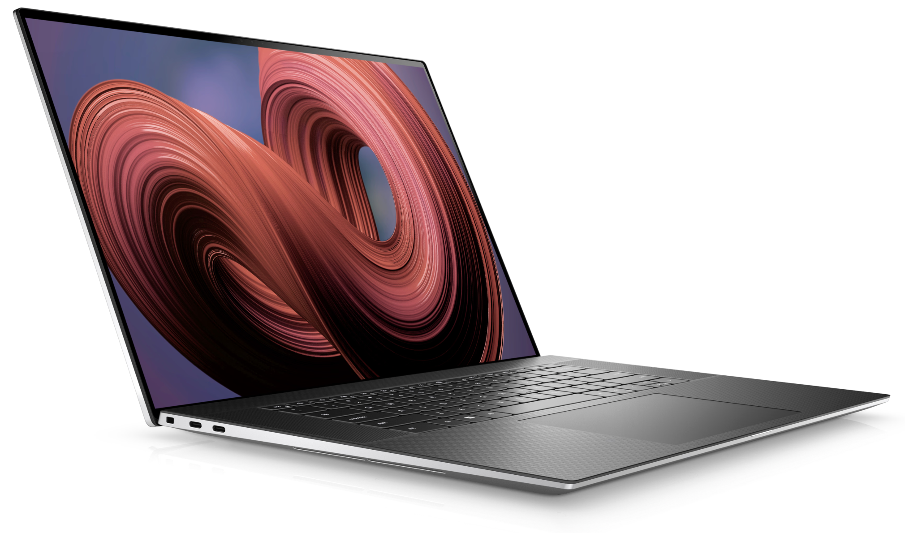
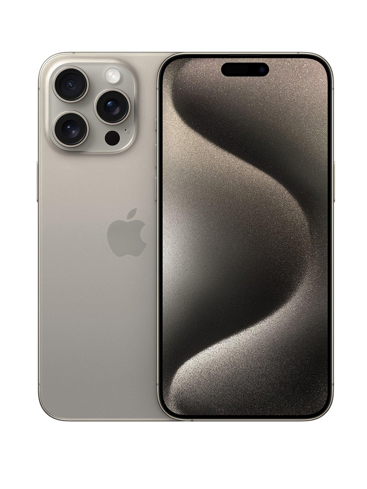
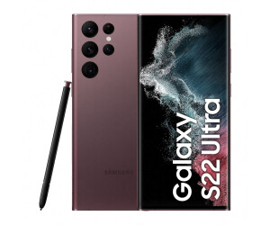

Dell laptops are known for their reliability and performance. They offer a wide range of models, from lightweight and portable options to powerful gaming laptops. Dell laptops often come with high-quality displays, fast processors, ample storage, and long battery life. They also provide a good balance between price and features. Whether you're a student, professional, or gamer, Dell offers a variety of laptops to suit your needs
Lenovo laptops are well-known for their durability and reliability. They offer a wide range of models, catering to different needs and preferences. Lenovo laptops are often praised for their sleek designs, powerful performance, and long battery life. They come equipped with high-quality displays, fast processors, ample storage, and excellent build quality. Lenovo also offers versatile options, including 2-in-1 laptops that can transform into tablets. Whether you're a student, professional, or creative, Lenovo has a laptop that can meet your requirements.
The iPhone 15 Pro Max is the latest flagship phone from Apple. It boasts a stunning design with a large, edge-to-edge display and a sleek, premium build. The Pro Max model offers a powerful A15 Bionic chip, which provides lightning-fast performance and improved efficiency. With its advanced camera system, you can capture professional-quality photos and videos. The phone also offers a long-lasting battery life and support for 5G connectivity.
The Samsung S22 Ultra is the latest flagship phone from Samsung. It features a sleek and modern design with a stunning display that offers vibrant colours and sharp visuals. The S22 Ultra is equipped with a powerful processor, ample RAM, and generous storage capacity, ensuring smooth performance and the ability to handle demanding tasks. The camera system is impressive, with high-resolution sensors and advanced features that allow you to capture stunning photos and videos. Additionally, the S22 Ultra supports 5G connectivity, ensuring fast internet speeds.